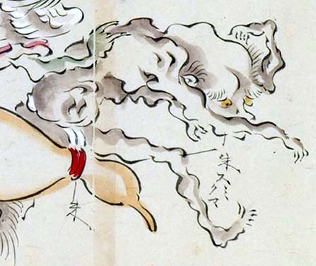

老人の化物。体は茶色で、褌を身につけている。白く長い眉毛が特徴的である。長い腕をくねらせ、ほうほうの体で、必死に走り去ろうとしている。
著作者：玉水写／出典：親書誌：U426_nichibunken_0095：土佐光起百鬼夜行之圖；トサミツオキヒャッキヤギョウノズ／日付：2007／資源識別子：U426_nichibunken_0095_0050_0000
Copyright (c)2010- International Research Center for Japanese Studies, Kyoto, Japan. All rights reserved.